Using Karm
You can begin using Karm by simply following these steps:
- Downloading it here. Unzip the package to any directory.
- If you are using windows start Karm.exe, if linux 32 bit then KarmLinux32.exe, if linux 64 bit then linux64\KarmLinux64.exe
- The interface comes up with the a sample Spore of tasks already loaded, you can expand the tree to look at the various tasks entered in the Spore.
Karm Files
Here we look at all the files in the Karm Directory:- Karm.exe is the windows executable
- KarmLinux.exe is the linux executable
- LuaXML_lib.dll, LuaXML_lib.so are support libraries for Karm
- Readme1st.txt is a text file containing information to get started and useful links
- KarmConfig.lua is a Karm configuration file which is not necessary to have. It allows you to customize Karm the way you want it.
- Filters is a directory containing sample filter files to filter out tasks
- images is a directory containing image files that the Karm program needs
- Tasks is a directory containing sample task Spore files
Basic Usage Flow
The basic way to use Karm is as follows:- Create and manage tasks and their properties/schedules/etc.
- Update task data as tasks progress
- Track task progress by looking at the work done and/or filtering out relevant tasks
To do this use the filtering engine to shortlist or filter out relevant tasks that you want to see from a sea of tasks.
Creating and Managing Tasks
Root NodeThe Karm task tree consist of a root node called 'Task Spores'. This node will still be there if you don't have any task. In the download package a Spore is already loaded in you task Tree. A Spore is a file containing many tasks. The preloaded file is loaded automatically because of the setting in KarmConfig.lua which loads that file. You can unload it by pressing the unload spore toolbar button as mentioned below in the interface discussion. Once unloaded you will be left with the root node.
Create Tasks
- Create task under any node (even the root node) by pressing the create task button 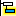. If you are creating it under the root node then Karm will automatically create a Spore for you which can be saved on your computer.
- Edit task by launching the task edit form using the the toolbar button 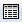. This form will allow you to edit all task properties using the GUI.
- Launch the Filter Criteria setting form using the toolbar button . This form will allow you to create, save, load and apply any type of complex filtering criteria. There are already examples supplied in the Download package in the Filter sub-directory.
Karm Interface
The Karm interface consists of: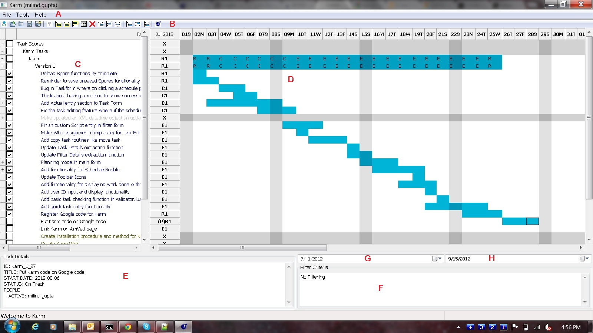
- Menu Bar (A) - Contains a customized menu structure as defined in the file KarmConfig.lua
- Toolbar (B) - Contains useful tool buttons to manage the tasks
- A task tree Pane (C)
- A Gantt Chart Pane (D)
- Task details section (E)
- Filter Criteria Section (F)
- A Start date selection box (G)
- A End date selection box (H)
Menu Bar
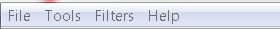The Menu bar consists of the menu items defined in KarmConfig.lua (The Karm configuration file). If there is no configuration file then you will only see File and Help menu's. This Menu bar is totally customizable in KarmConfig.lua and you can associate some code with each menu item or an entire lua script file which is executed when the menu item is clicked by the user.
Toolbar
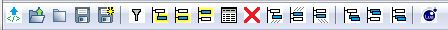The icons may look a little different in windows but the tool tips will make it clear what they represent. Starting from left to right here is what the icons mean:
- - This icon allows you to load a XML spore into Karm. Currently the XML export functionality has not been added so this is not of much use
- - This allows you to load any saved spores into Karm
- - This unloads a currently selected Spore from Karm
- - This saves all spores to disk. If there is a newly created spore it will prompt where to save it
- 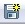 - This saves the currently selected Spore
- - This opens up the Filter criteria form
- - This creates a new task under (child) the current selected task and opens the task form to set task information
- 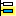 - This creates a new task below (sibling) the current selected task and opens the task form to set task information
- 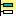 - This creates a new task above (sibling) the current selected task and opens the task form to set task information
- - This opens up the currently selected task for editing in the Task Form
- - This deletes the currently selected task and all its sub tasks
- 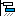 - This moves the selected task under (child) a task that is clicked by the user next
- 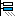 - This moves the selected task below (sibling) a task that is clicked by the user next
- 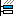 - This moves the selected task above (sibling) a task that is clicked by the user next
- - This copies the selected task under a task that is clicked by the user next
- 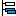 - This copies the selected task below (sibling) a task that is clicked by the user next
- 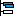 - This copies the selected task above (sibling) a task that is clicked by the user next
- - This opens up a Form which can be used to run a script either from a file or by typing directly on the form. So this is used to execute a Macro
Task Tree Pane
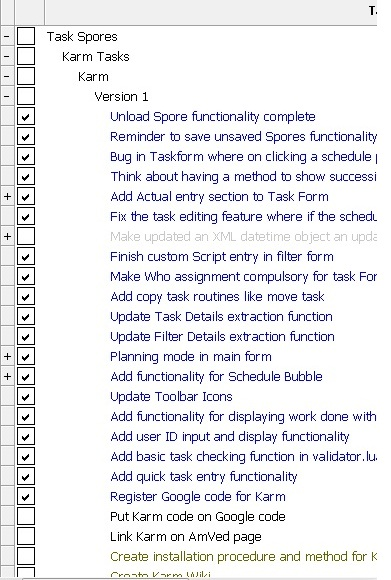This pane shows all the tasks as a indented tree. It has the following main points:
- A '-' on the row label means a tree is expanded. It can be collapsed by clicking on the '-'
- A '+' on the row label means a tree is collapsed. It can be expanded by clicking on the '+'
- The checkbox on the left of the task title if checked indicates the task is already done.
- In the displayed color scheme Done tasks are blue, obsolete are Grayed, not started are green.
Gantt Chart Pane
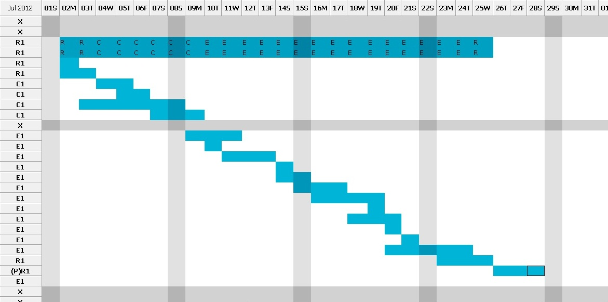The Gantt chart pane shows the Gantt chart for the list of tasks in the task tree pane on the left. Here are the main features of the Gantt Chart
- The top left shows the Month and Year for the date visible on the 1st column of the Gantt Chart.
- The column titles show the date and the weekday first letter So for example the 1st column represents 1st July 2012 which is a Sunday and so on.
- To Row labels identify what type of schedule is visible in the GanttChart"
- X - means no schedule is there for this task
- E - Schedule entered as an estimate
- C - Schedule entered as a Committed schedule
- R - A committed schedule revised
- A - Actual work done on the task
- The number after the letter represents the number of that schedule in that category. For example R2 would mean it is the second revision.
- (P) - this prefix means that this task is put in planning mode which allows the schedule days to be toggled by mouse clicks
- The Sundays are marked by a darker color in this color scheme. The color scheme can be changed using KarmConfig.lua
Task Details Pane
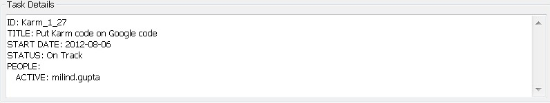This pane consists of the details of the task selected in the Task Tree Pane above. It shows a lot of information about the task that is present in the task. The information bit title is all upper case followed by a ':' and then the data from the task itself. You can expect to see the following information bits in this pane:
- ID - Task ID which is unique in all loaded Spore (collection of tasks) files. This is generated automatically for all tasks except for those tasks which are created directly in a Spore
- TITLE - The title for the task which is actually visible in the Task Tree Pane
- START DATE - The date when the task is decided to begin
- DUE DATE - Task due date
- STATUS - Task Status (On Track, Behind, Done, Obsolete, Not Started)
- PEOPLE - People responsible for the task categorized as ACTIVE or INACTIVE members
- LOCKED - If YES then the task is locked and this is followed by a List of people having READ ACCESS to the task and READ/WRITE ACCESS to the task
- ASSIGNEE - List of people who assigned the task
- PRIORITY - Task Priority
- PRIVATE TASK - If this is displayed this is marked as a private task
- CATEGORY - Category of the task
- SUB-CATEGORY - Sub-category of the task
- TAGS - All tags associated with the task separated by ,
- COMMENTS - Any comments added to the task
Filter Criteria Pane
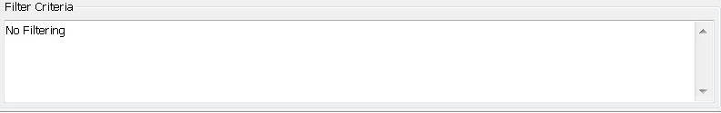This section shows the details of any filtering criteria applied to all loaded tasks to display the tasks you are seeing in the task tree pane.
Start and Stop Dates selection
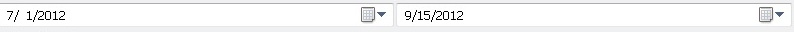The 2 drop down date selection boxes allow you to select the start and stop dates that are displayed in the Gantt Chart area above. As soon as you change the date the Gantt Chart areas is updated.
Task Entry Form
The task entry form provides an interface to enter/edit task details. It consists of a number of tabs to better organize all the task details.Basic Info Tab
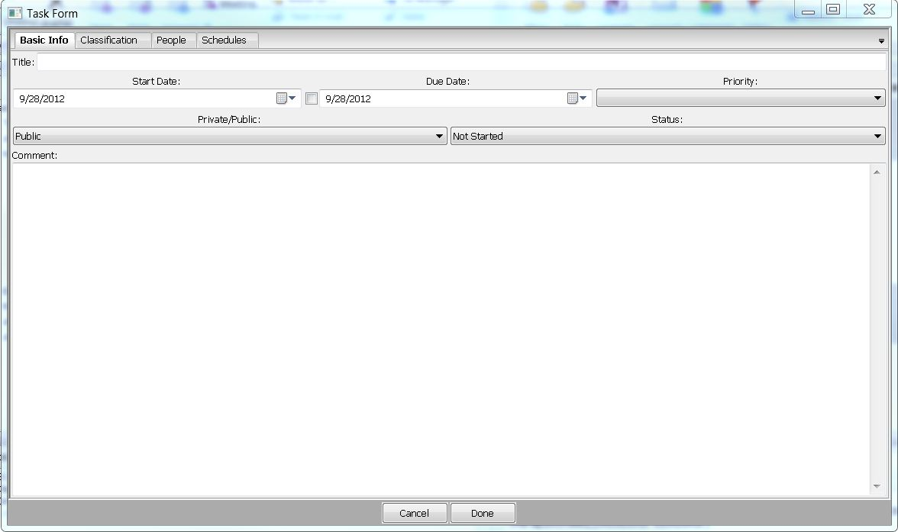This tab has the basic information for the task:
- Title: Descriptive name of the task (This is compulsory)
- Start Date: By default it is set to the current date
- Due Date: If the checkbox beside it is checked then the due date can be set and is recorded in the task details
- Priority: (1-9) a priority number for the task. Does not have any meaning to the software so can be interpreted the way the user wants it
- Private/Public: Allows the task to be declared Public or Private. For a task management system with lots of users using a common task database, private tasks would be personal tasks not visible to others
- Status: Can be one of these:
- Not Started: Task is not started. This is the default for a new task.
- On Track: Task progress is on track
- Behind: Task is behind schedule
- Pending: The task has been put on hold after being started indefinitely
- Obsolete: The task is obsolete now
- Done: The task is done
- The status of the task plays an important role and helps in reviewing the project status. The colors of the tasks as seen in the task Tree interface change with the status.
- Comment: Any comment to be associated with the task
Classification Tab
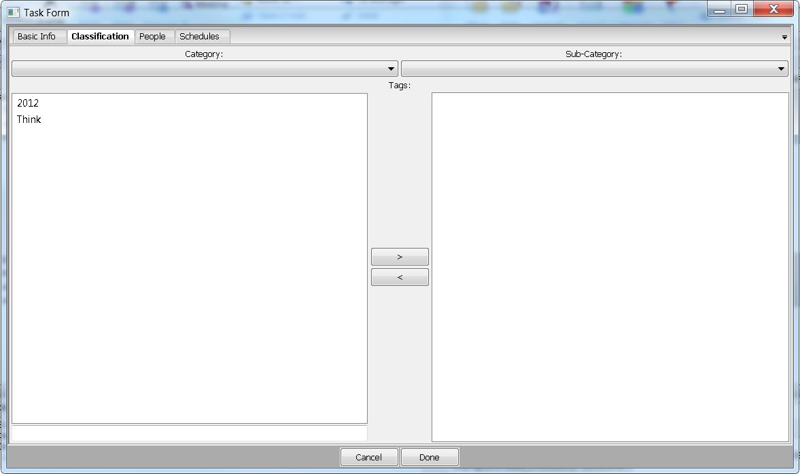This tab has information about classification/categorization of the task
- Category: Is a drop down list to choose a category of the task. Categories and Sub-Categories are fixed in KarmConfig.lua
- Sub-Category: Is a drop down list to choose a sub-category of the task. Categories and Sub-Categories are fixed in KarmConfig.lua
- Tags: The 2 list interface allows choosing of tags to tag the task with. A new tag can also be created to tag the task with by entering it in the text box in the lower left corner.
People Tab

This tab allows you to select people for the task. There are 3 fields where you can put people into and each field can have multiple people:
- Who: These are the people who are responsible for the task. When you add a person here it comes with a check box. You can right click the person to toggle the check box. A check box checked means that the person is no longer actively responsible for the task. This may be a situation where this person was responsible for the task but the responsibility has been released.
- Access: These are people who are not responsible for the task but have access to the task data. This field will be important when Karm has implemented the permissions algorithm for Distributed Task Management.
- If you have write permission on a task through Who then you can read/edit that and all child hierarchy tasks in any way.
- If you have write permission on a task through Assigning then you can edit that task obviously you had assignment privileges because you owned a parent/ancestor making this rule unnecessary
- If you have read/write permission from Access you can only read/write that task but read all child hierarchy tasks.
- Assignee: These are people who are assigning the task to the people who are responsible. If a task has been assigned then it cannot be changed by the responsible people ('Who'), they can only be modified by the people who Assigned them or the people with write permission in the Access listing. The access locking has not been implemented yet in Karm and will be done when Distributed Task Management is implemented.
Schedules Tab
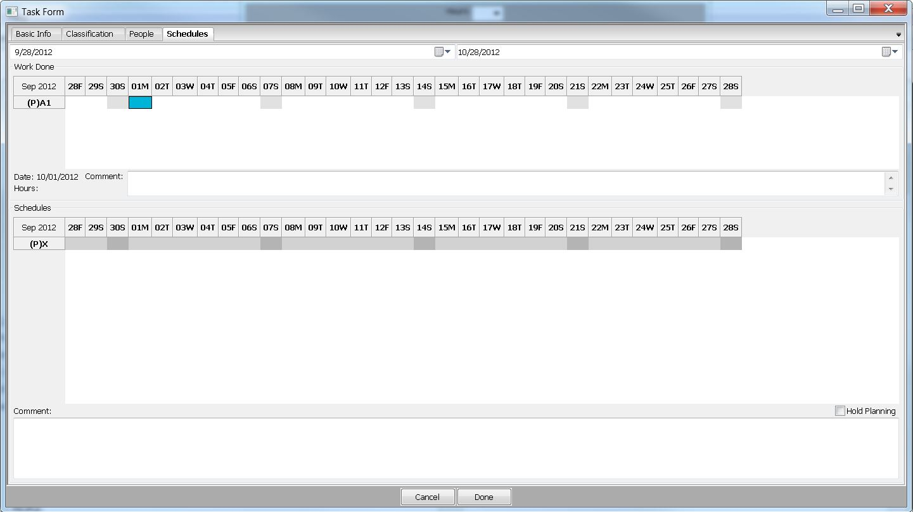The schedules tab allows you to plan out the task working days. It consists of 2 Gantt Charts. One on the top and one below. It also has 2 date fields which set the starting and ending dates of the Gantt Charts.
- Actual Work Done: This is the one on the top and is to record the actual work you did on the task
- Planned Schedule: This is the one on the bottom and is to record the planned schedule for the task
Both Gantt Charts show (P)X in the left label when there is no date set at all for either chart.
Actual Work Done
- You can click on any date on this top chart and it will be marked. Also the left label will become (P)A1 - A indicating it is an Actual work done date.
- Clicking it again will unmark it.
- Double clicking it will bring the form shown below:
- 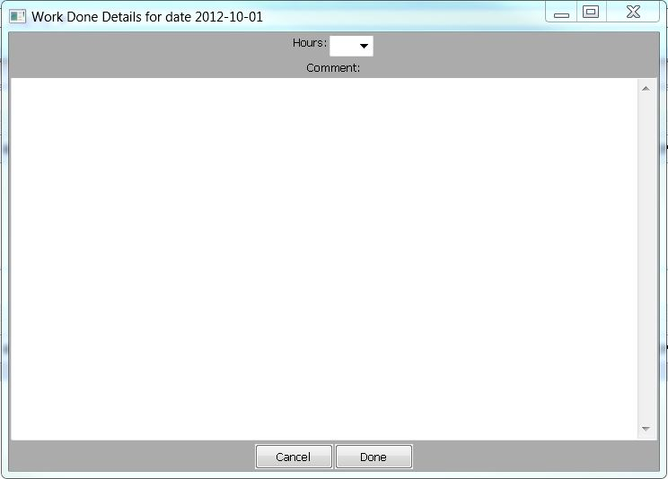
- In this form you can set the number of hours you worked on the task on the highlighted day and any associated comment
Planned Schedule
- Same as the upper Gantt Chart, clicking on any date will mark it. And the left label will also change. The left label will show a letter and a number instead of a 'X' to indicate a type of schedule.
- E - This is an estimated schedule. There can be many revisions of an estimated schedule and the revision number is the number following E. So (P)E1 means the 1st estimated schedule and (P)E10 means the 10th estimated schedule.
- C - This is a committed schedule. There can be only 1 committed schedule
- R - These are revision schedules normally after a committed schedule (Although Karm does not force this, it can be forced by adding a macro to KarmConfig.lua
- All the above types of schedules can be cycled by clicking on the left label.
- The hold planning check box on the right side after the second Gantt Chart when clicked will tell Karm not to write the Planned Schedule data to the task data just yet and remain in Planning mode. So you can keep planning this task schedule either by turning on Planning mode in the main GUI or by re-editing the task.
- The comment box at the bottom is to store a comment with the latest planning schedule (Note this currently will be ignored if you select Hold Planning)
Filter Criteria Form
This form allows you to create complex filteration criteria to filter out the task you are most interested in. Using this you can create complex filters, save them, manually edit them (they are saved as text files), load them automatically into Karm by a shortcut key. This form has the following tabs:Task and Category
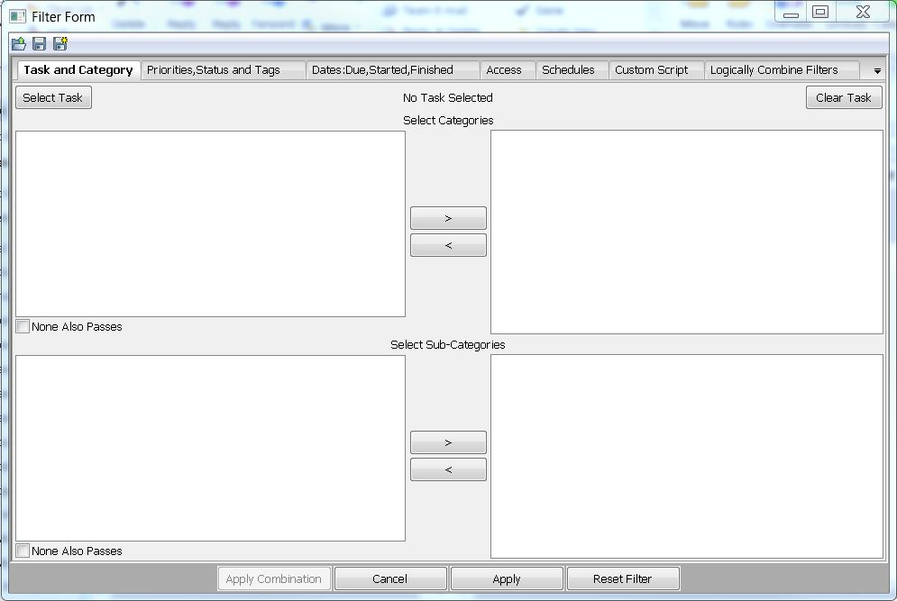This tab allows selecting the following:
- A task and its sub task. If you click on 'Select Task' you see the following tree:
- 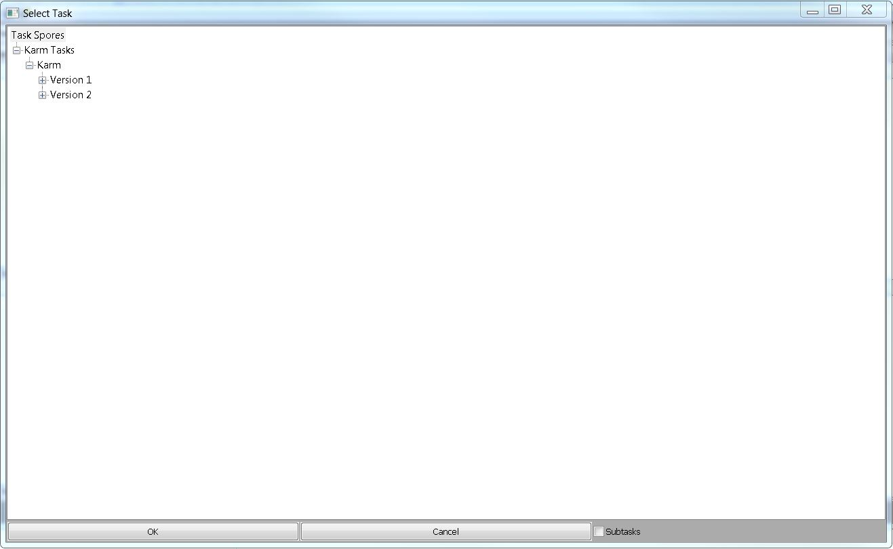
- Here you can select any task and click on Subtasks check box. This will tell the filter that you want to see that particular task and all its subtasks.
- You can select Categories and Sub-Categories that the task must have in order to be seen. If all the loaded tasks do not have any Category or Sub-Category assigned to them the boxes will be empty. The boxes automatically show the Categories and Sub-Categories in the current task collection.
- The 'None Also Passes' check box if checked will also show tasks without any Category or Sub-Category when you have selected a list of Categories/Sub-Categories. If you have not selected anything then obviously the tasks without any Category/Sub-Category will be shown.
Priorities,Status and Tags
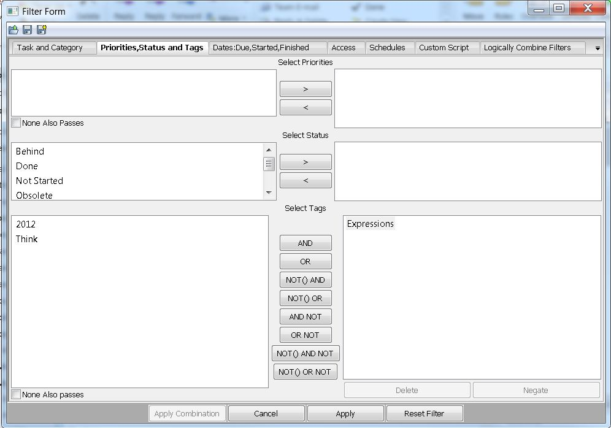Dates:Due,Started,Finished
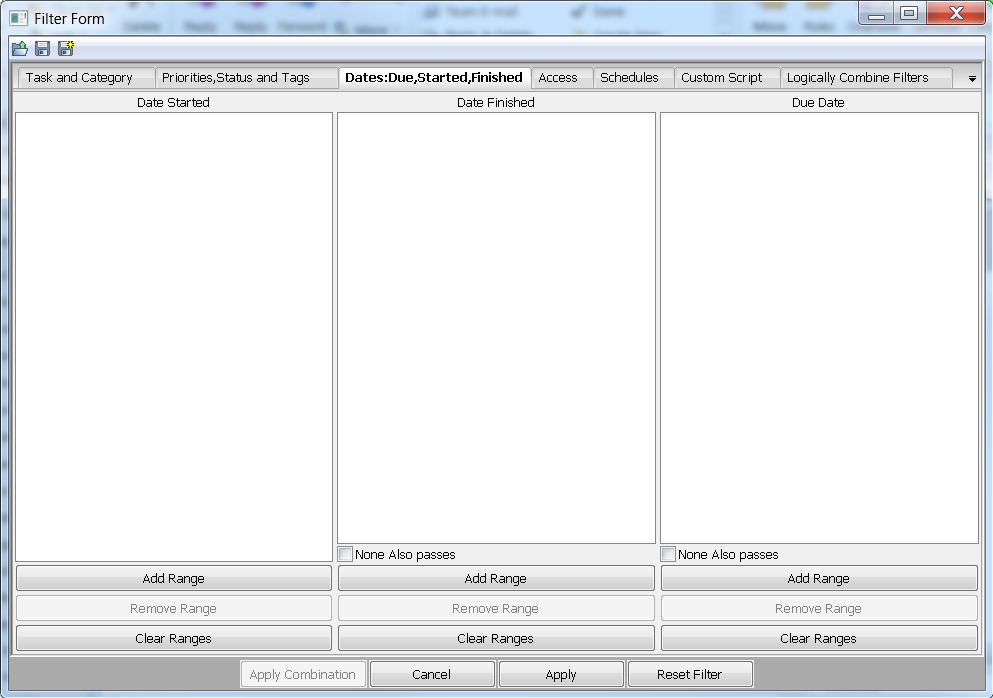Access
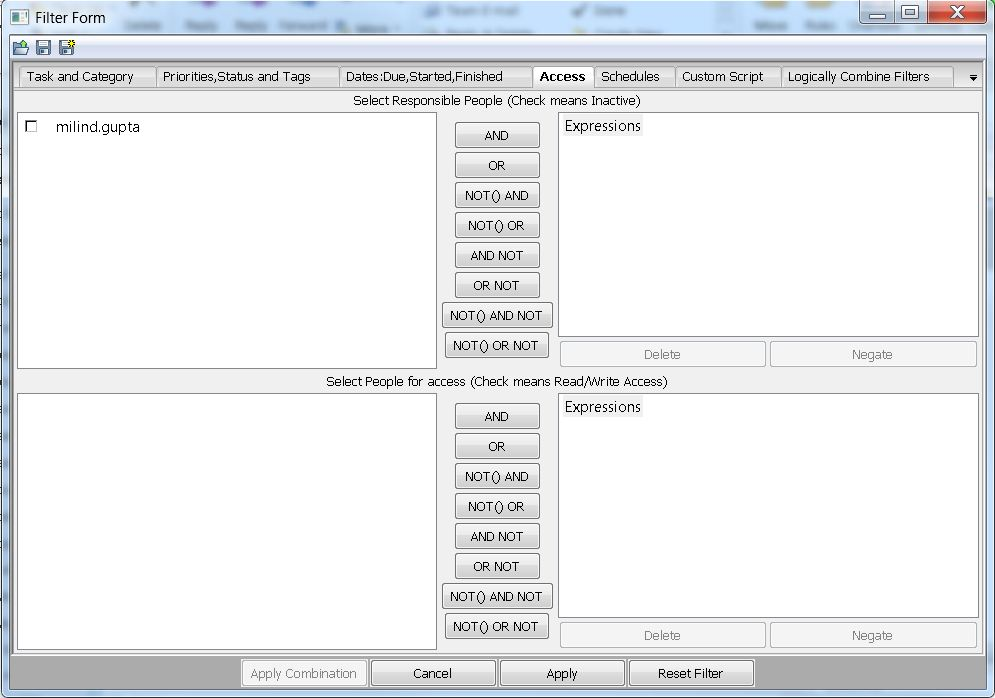Schedules
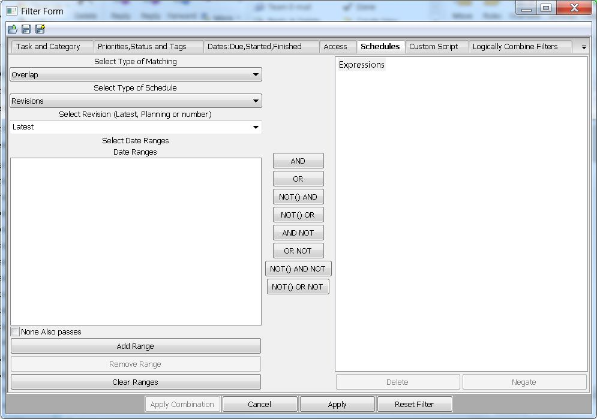Custom Script
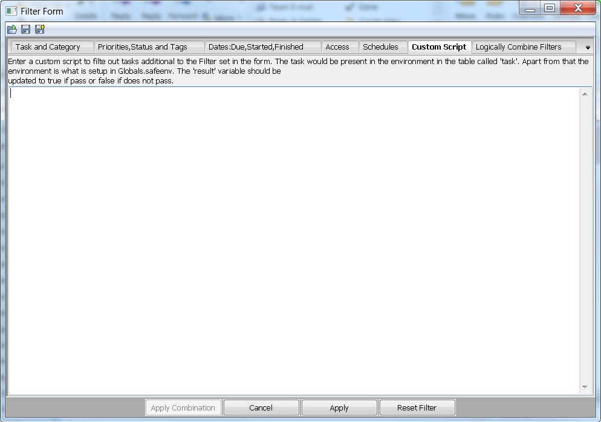Logically Combine Filters
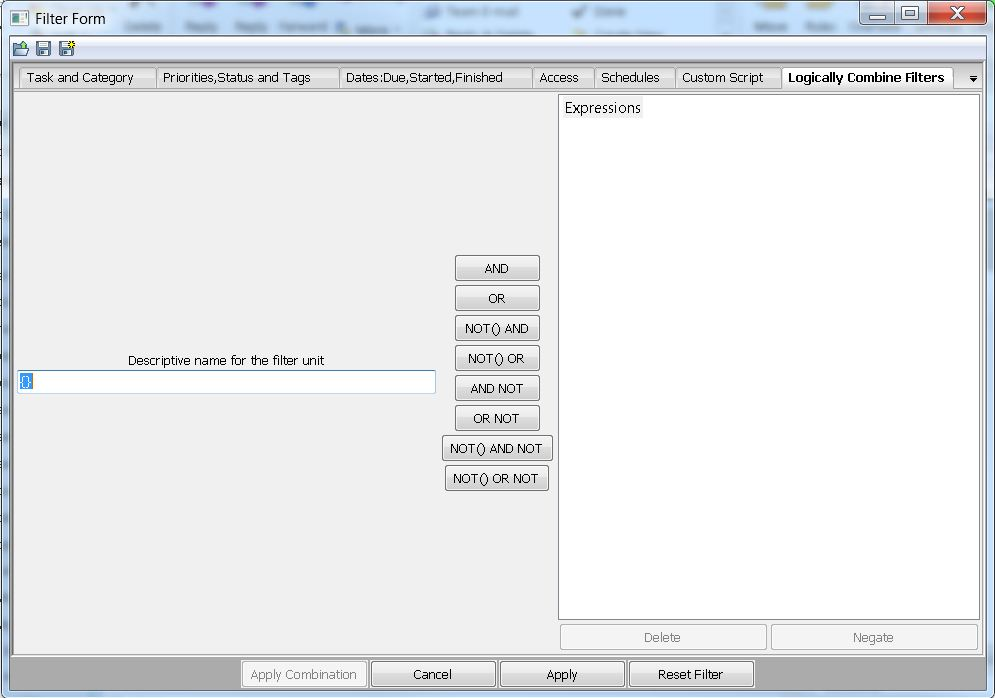Recent Articles:
indexWelcome to the Karm wiki:Karm is a flexible, exte...
Contributing to Karm
Help is needed!:You can contribute to Karm in man...
Developer
This page contains a lot of developer resources fo...
Feature Wish List
Keyboard shortcut keys catching Karm Server devel...
Karm Object Hierarchy
Here is an alphabetical list of all Objects in the...